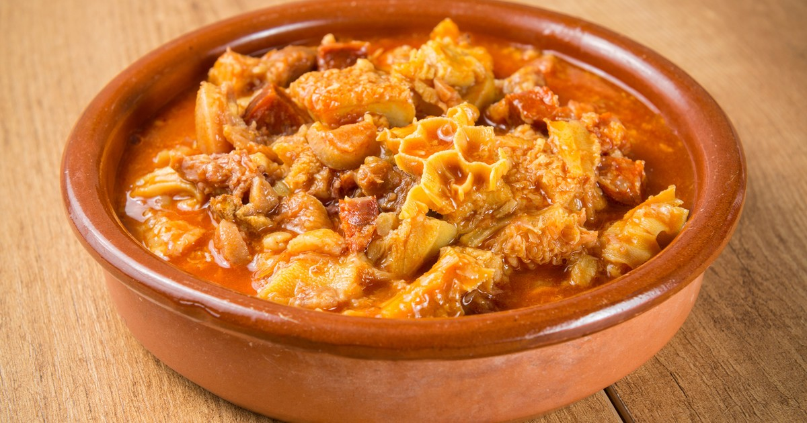
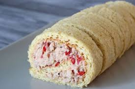

La comida de NY es muy buena!!!

El primer dia me comi alto guiso de mondongo, super experiencia gastronomica

El segundo dia me comi un pionoo de atun, super wow!
Fecha de publicacion: 31/03/2025
Autor: Nicolas Abosch

El primer dia me comi alto guiso de mondongo, super experiencia gastronomica

El segundo dia me comi un pionoo de atun, super wow!